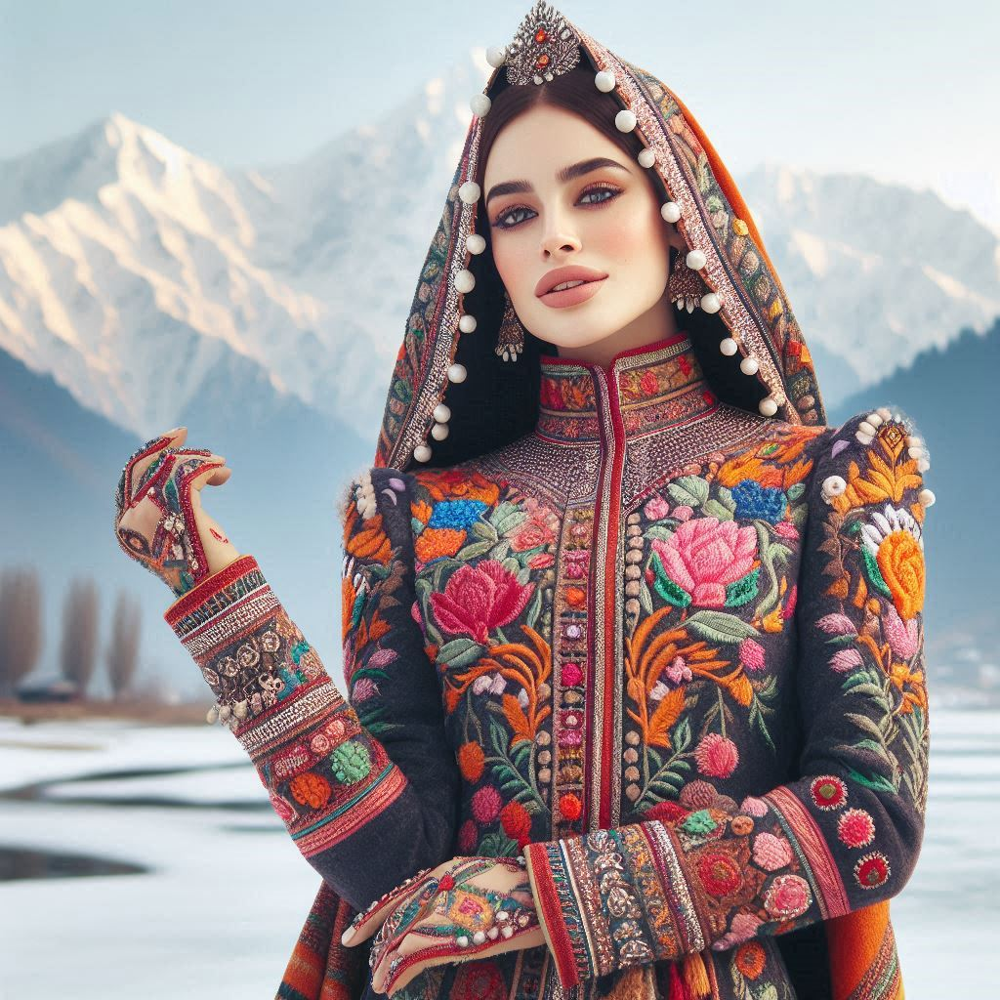
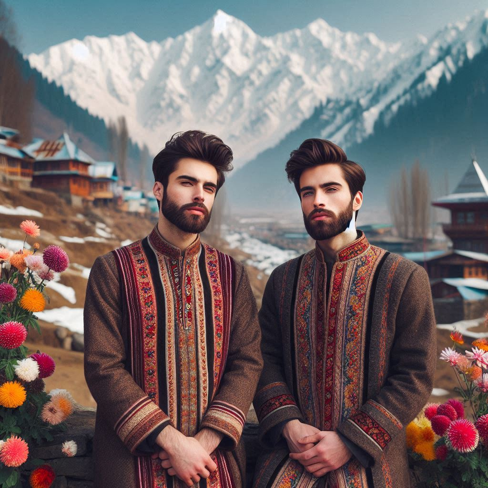

The traditional dress of Jammu and Kashmir reflects the region's diverse culture, climate, and religious practices. Given its geographic and ethnic diversity, there is a wide range of traditional attire worn by people in different areas, from the Kashmir Valley to Jammu and Ladakh. Here is an overview of the distinct clothing styles found in the region:
1. Kashmiri Attire
- Pheran: The pheran is a long, loose gown worn by both men and women, designed to provide warmth during the harsh winters. It typically extends to below the knees.
- Shalwar and Kameez: Women pair the pheran with a loose-fitting shalwar (pants) and a taranga—a traditional headdress worn by Kashmiri Pandit women on special occasions like weddings.
- Headgear: Women often wear a headscarf known as a taranga in traditional settings. Muslim women sometimes wear a long scarf or dupatta to cover their heads.
2. Ladakhi Attire
- Goncha: The goncha is a traditional robe-like garment worn by both men and women in Ladakh, made from wool or heavy fabric to provide warmth against the extreme cold.
- Perak: Ladakhi women wear the perak, a headdress adorned with turquoise, coral, and other precious stones, which signifies status and family heritage.
- Bok: The bok is a cape worn over the goncha for additional warmth.
3. Jammu Region Attire
- Women: Women in Jammu often wear colorful sarees with heavy embroidery, salwar kameez, or lehenga during festivals and traditional functions.
- Men: Traditional men's wear includes kurta-pajama or dhoti-kurta. During special occasions or religious ceremonies, men might wear sherwanis or jackets with traditional turbans.


4. Kashmiri Embroidery
- Kashida: Intricate needlework featuring natural motifs such as flowers, leaves, and birds, commonly found on pherans, shawls, and sarees.
- Tilla Embroidery: A form of metallic threadwork, often in gold or silver, used on special occasion garments, particularly bridal wear.
5. Shawls and Wraps
- Pashmina Shawls: These world-famous shawls are made from the wool of Pashmina goats and often have elaborate embroidery.
- Kani Shawls: Woven with small sticks (kanis), these shawls display intricate patterns and are prized for their craftsmanship.
6. Footwear
- Traditional Footwear: The people of Jammu and Kashmir often wear leather or woolen shoes, known as Pulhor or jooti. In Ladakh, fur-lined boots are common due to the cold climate.
7. Jewelry
- Kashmiri Jewelry: Women wear dejhoor (ear ornaments), tika (forehead adornment), and kanthas (necklaces).
- Ladakhi Jewelry: Ladakhi women are known for their ornate jewelry made of turquoise, coral, and silver, including heavy necklaces and earrings that are culturally significant.
The traditional dress of Jammu and Kashmir, with its rich fabric, unique embroidery, and diverse styles, reflects the beauty, craftsmanship, and cultural legacy of the region. These garments are not only a testament to the harsh climate but also a celebration of the rich heritage and artistic traditions of the state.